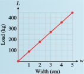

Subsection 6.3 Joint Variation
Sometimes we can find patterns relating the entries in a table.
Example 6.3.5.
Rectangular beams of a given length can support a load, \(L\text{,}\) that depends on both the width and the depth of the beam, so that \(L = f (w, d)\text{.}\) The table shows some of the values.
| Maximum Load (kilograms) | ||||||
| Depth (cm) | ||||||
| Width (cm) | \(0\) | \(1\) | \(2\) | \(3\) | \(4\) | \(5\) |
| \(0\) | \(0\) | \(0\) | \(0\) | \(0\) | \(0\) | \(0\) |
| \(1\) | \(0\) | \(10\) | \(40\) | \(90\) | \(160\) | \(250\) |
| \(2\) | \(0\) | \(20\) | \(80\) | \(180\) | \(320\) | \(500\) |
| \(3\) | \(0\) | \(30\) | \(120\) | \(270\) | \(480\) | \(750\) |
| \(4\) | \(0\) | \(40\) | \(160\) | \(360\) | \(640\) | \(1000\) |
| \(5\) | \(0\) | \(50\) | \(200\) | \(450\) | \(800\) | \(1250\) |
Evaluate the function at \(f(2, 5)\text{.}\) Interpret your answer for the problem situation.
Is it true that \(f(2, 5) = f(5, 2)\text{?}\)
Consider the row corresponding to a width of \(3\) cm. How does the load depend on the depth?
In the row for \(2\) cm and the column for \(5\) cm, we find that \(f (2, 5) = 500\text{.}\) A beam of width \(2\) cm and depth \(5\) cm can support a maximum load of \(500\) kilograms.
In the row for \(5\) cm and the column for \(2\) cm, we find that \(f (5, 2) = 200\text{,}\) so \(f (2, 5) \ne f (5, 2)\text{.}\)
-
Using the row for width \(3\) cm, we make a new table showing the relationship between load and depth. The increase in load for each increase of \(1\) cm in depth is not a constant, so the graph shown below is not a straight line.
The curve does pass through the origin, so perhaps the data describe direct variation with a power of depth. If we try the equation \(L = kd^2\) and use the point \((1, 30)\text{,}\) we find that \(30 = k \cdot 1^2\text{,}\) so \(k = 30\text{.}\) You can check that the equation \(L = 30d^2\) does fit the rest of the data points.
| Depth | Load |
| \(0\) | \(0\) |
| \(1\) | \(30\) |
| \(2\) | \(120\) |
| \(3\) | \(270\) |
| \(4\) | \(480\) |
| \(5\) | \(750\) |
Checkpoint 6.3.6.
- For the table in Example 6.3.5, consider the column corresponding to a beam depth of \(3\) cm. Graph \(L\) as a function of \(w\) when the depth is constant at \(d = 3\text{.}\)
- Find a formula for \(L\) as a function of \(w\) for \(d = 3\text{.}\)
- 
\(L = 90w\)
In Checkpoint 6.3.6, you should find that the load varies directly with width when the depth is \(3\) centimeters. In fact, the load varies directly with width for any fixed depth.
In Example 6.3.5, we saw that the load varies with the square of depth when the width is \(3\) centimeters, and this relationship also holds for any value of \(w\text{.}\) Consequently, we can find a constant \(k\) such that
This relationship between variables is an example of joint variation.
Joint Variation.
-
We say that \(z\) varies jointly with \(x\) and \(y\) if
\begin{equation*} z = kxy,~~~ k\ne 0 \end{equation*} -
We say that \(z\) varies directly with \(x\) and inversely with \(y\) if
\begin{equation*} z = k\dfrac{x}{y},~~~ k\ne 0, ~~ y\ne 0 \end{equation*}
Example 6.3.7.
Find a formula for load as a function of width and depth for the data in Example 6.3.5.
The function we want has the form
for some value of \(k\text{.}\) We use the fact that \(L = 10\) when \(w = 1\) and \(d = 1\text{.}\) Then
so \(k = 10\text{.}\) The formula for load as a function of width and depth is
You can check that this formula works for all the values in the table.
Checkpoint 6.3.8.
The cost, \(C\text{,}\) of tiling a rectangular floor depends on the dimensions (length and width) of the floor, so \(C = f (w, l)\text{.}\) The table shows the costs in dollars for some dimensions.
| Cost of Tiling a Floor | ||||||
| Length (ft) | ||||||
| Width (ft) | \(5\) | \(6\) | \(7\) | \(8\) | \(9\) | \(10\) |
| \(5\) | \(400\) | \(480\) | \(560\) | \(640\) | \(720\) | \(800\) |
| \(6\) | \(480\) | \(576\) | \(672\) | \(768\) | \(864\) | \(960\) |
| \(7\) | \(560\) | \(672\) | \(784\) | \(896\) | \(1008\) | \(1120\) |
| \(8\) | \(640\) | \(768\) | \(896\) | \(1024\) | \(1152\) | \(1280\) |
| \(9\) | \(720\) | \(864\) | \(1008\) | \(1152\) | \(1296\) | \(1440\) |
| \(10\) | \(800\) | \(960\) | \(1120\) | \(1280\) | \(1440\) | \(1600\) |
Consider the row corresponding to \(6\) feet in width. Does cost vary directly with length?
Consider the column corresponding to a length of \(10\) feet. Does the cost vary directly with width?
Given that the cost varies jointly with the length and width of the floor, find a formula for \(C = f(w, l)\text{.}\)
Yes
Yes
\(C = 16wl\)